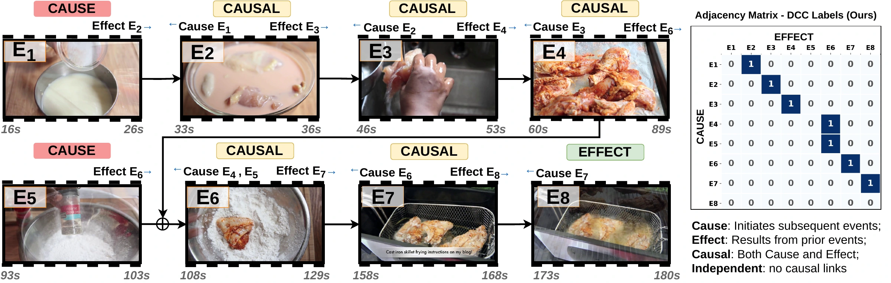

Video & language
Temporally grounded captions and multimodal representations that describe events in long videos.
AI RESEARCHER & ENGINEER
Founding Technical Staff at ManaMind
I work on multimodal AI: understanding what happens in video, how events connect, and how sight and sound inform one another.
Previously Research Fellow, CVSSP · University of Surrey
01 / RESEARCH
My research connects video, language, and audio with the relationships that give events meaning. I develop models and benchmarks for describing complex videos and reasoning about their temporal and causal structure.
I am the first author of Causal-VLM (NeurIPS 2026), NarrativeBridge (ICLR 2025), CAD (WACV 2024), and SEM-POS (CVPR Workshops 2023).
Temporally grounded captions and multimodal representations that describe events in long videos.
Moving from a sequence of events to the observed dependencies that connect them.
Aligning what a model sees and hears to answer questions about the world.
02 / PUBLICATIONS
A framework for describing events in long videos and predicting their observed prerequisite relationships. Causal-VLM produces event captions, timestamps, and a causal graph, and introduces the Dense Causal Captions (DCC) benchmark built on ActivityNet and YouCook2.

International Conference on Learning Representations (ICLR), 2025
A video captioning method that describes not only what happens but why. It introduces the Causal-Temporal Narrative benchmark (MSVD-CTN and MSR-VTT-CTN), whose captions encode cause and effect over time, and the Cause-Effect Network, a two stream architecture that models cause and effect dynamics separately before decoding a causally grounded caption.
IEEE/CVF Winter Conference on Applications of Computer Vision (WACV), 2024
An end to end network for audio-visual question answering that aligns audio and visual signals at three levels: a parameter free contextual block for spatial alignment, a self supervised step for temporal alignment, and cross attention for semantic balancing. It improves over prior state of the art on MUSIC-AVQA by 9.4 percent on average.
IEEE/CVF Conference on Computer Vision and Pattern Recognition (CVPR) Workshops, 2023
A global local fusion network that supervises captioning with distinct part of speech components, aligning visual features with language structure to produce captions that are both grammatically and semantically correct on the MSVD and MSR-VTT benchmarks.
@inproceedings{nadeem2026causalvlm,
title={Causal-VLM: Dense Causal Captioning in Videos},
author={Nadeem, Asmar and Awan, Mahrukh and Awais, Muhammad and Dawes, Robert and Hilton, Adrian and Mustafa, Armin},
booktitle={Advances in Neural Information Processing Systems},
year={2026},
url={https://causalvlm.github.io/}
}
@inproceedings{nadeem2025narrativebridge,
title={NarrativeBridge: Enhancing Video Captioning with Causal-Temporal Narrative},
author={Nadeem, Asmar and Sardari, Faegheh and Dawes, Robert and Husain, Sameed and Hilton, Adrian and Mustafa, Armin},
booktitle={International Conference on Learning Representations (ICLR)},
year={2025}
}
@inproceedings{nadeem2024cad,
title={CAD: Contextual Multi-Modal Alignment for Dynamic AVQA},
author={Nadeem, Asmar and Hilton, Adrian and Dawes, Robert and Thomas, Graham and Mustafa, Armin},
booktitle={Proceedings of the IEEE/CVF Winter Conference on Applications of Computer Vision (WACV)},
year={2024}
}
@inproceedings{nadeem2023sempos,
title={SEM-POS: Grammatically and Semantically Correct Video Captioning},
author={Nadeem, Asmar and Hilton, Adrian and Dawes, Robert and Thomas, Graham and Mustafa, Armin},
booktitle={Proceedings of the IEEE/CVF Conference on Computer Vision and Pattern Recognition (CVPR) Workshops},
year={2023}
}03 / BACKGROUND
ManaMind builds vision-driven agents for autonomous quality assurance in video games.
Centre for Vision, Speech and Signal Processing (CVSSP). Research in causal video understanding, video captioning, and audio-visual learning.
04 / AT A GLANCE
Asmar Nadeem is Founding Technical Staff at ManaMind, where he has worked since June 2026. Previously, he was a Research Fellow in Multimodal and Spatial AI at CVSSP, University of Surrey. His research spans causal and temporal video reasoning, video captioning, audio-visual question answering, and multimodal language models.
Causal-VLM generates event captions, timestamps, and a graph of observed prerequisite relationships in long videos. It introduces the Dense Causal Captions (DCC) benchmark, extending ActivityNet and YouCook2 with causal annotations. The project page links to the paper, code, model weights, and DCC labels.
NarrativeBridge (ICLR 2025) is a video captioning method that models causal and temporal relationships. It introduces the Causal-Temporal Narrative benchmark (MSVD-CTN and MSR-VTT-CTN) and the Cause-Effect Network. Explore the project.
Each selected publication links to its paper and available resources. Causal-VLM and DCC resources are at causalvlm.github.io; NarrativeBridge resources are at narrativebridge.github.io. The full publication list is also available through Google Scholar and DBLP.